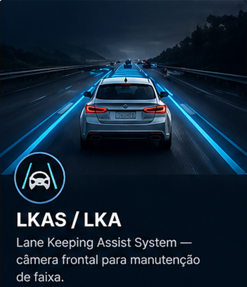
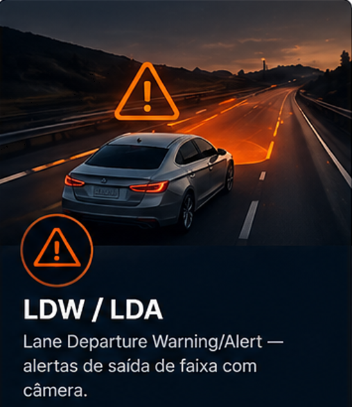
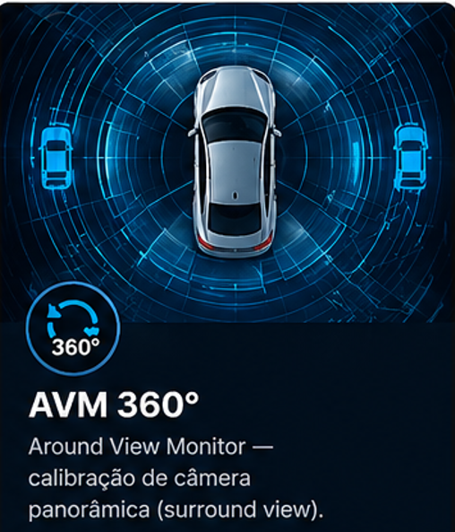
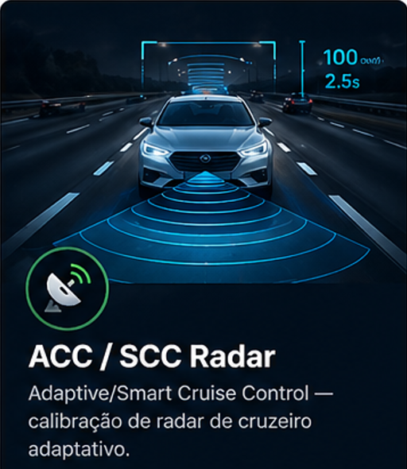
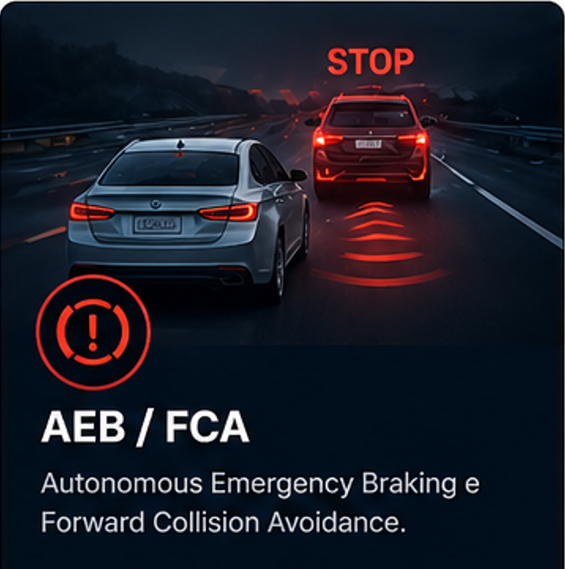
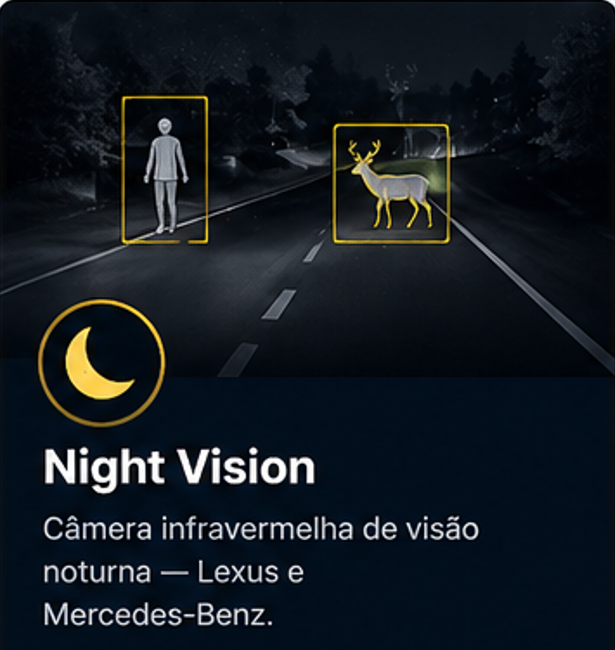
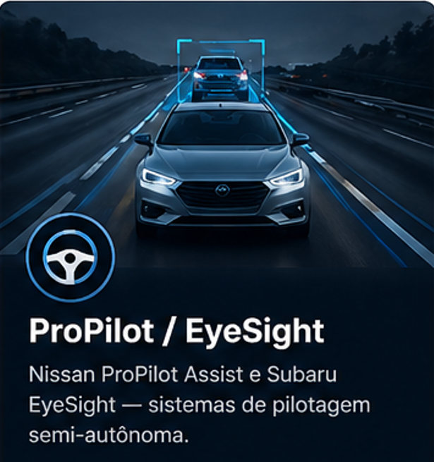

Mentoria técnica especializada para mecânicos, técnicos e auto centers que querem liderar o mercado de veículos semi-autônomos. 51+ marcas, 350+ modelos, cobertura mundial.
Sistemas e marcas que você vai dominar
Cada parabrisa trocado em um veículo semiautônomo exige recalibração obrigatória.
Quem dominar ADAS primeiro, captura esse mercado.
Qualquer intervenção no veículo pode desalinhar câmeras e sensores — mesmo sem impacto visível. Veja as situações mais comuns que exigem recalibração obrigatória:
Todo carro premium chegando nas oficinas hoje vem com câmeras, radares e sensores que a maioria dos técnicos ainda não sabe calibrar.
Após troca de parabrisa ou reparo de colisão, os sistemas LKAS, AVM e câmeras frontais precisam ser recalibrados — e poucos técnicos sabem como fazer corretamente.
ACC, AEB, SCC e sistemas de radar exigem targets específicos por marca e modelo. Sem o conhecimento certo, a calibração falha e o cliente volta reclamando.
Documentação técnica espalhada, desatualizada ou em idioma estrangeiro. Sem um guia confiável, cada calibração é uma aventura — e uma perda de tempo e dinheiro.
Com anos de atuação direta no mercado automotivo premium — atendendo auto centers, oficinas de veículos de luxo e lojas de troca de parabrisa — desenvolvi uma das bases de conhecimento mais completas sobre calibração de sistemas ADAS no Brasil.
Hoje, com autoridade técnica comprovada e um database que cobre 51 marcas e mais de 350 modelos, ofereço suporte especializado para técnicos e gestores que querem resolver qualquer sistema ADAS com segurança e precisão.
A adoção de ADAS nos veículos premium já é realidade. Veja a penetração por sistema nas oficinas e auto centers que atendemos:
Da câmera frontal ao radar adaptativo. Do sistema de visão noturna ao LIDAR. Cobertura completa para você atender qualquer veículo com confiança.







Cada sistema ADAS exige um tipo diferente de calibração. Entender a diferença é essencial para realizar o procedimento correto.
Um processo estruturado para você ganhar confiança e resolubilidade real em sistemas ADAS — do primeiro contato ao domínio completo.
Primeiro, mapeamos seu nível atual, os sistemas que você já atende e as marcas com que mais trabalha. A partir daí, montamos um plano personalizado para você.
Sessões objetivas com casos reais, documentação técnica exclusiva e acesso ao database de calibração. Você aprende resolvendo situações do seu dia a dia.
Acesso à plataforma de membros com todo o material técnico. Suporte direto para dúvidas em campo e atualizações contínuas com novos modelos e sistemas.
Cada plano dá acesso a diferentes níveis de suporte e material técnico. Comece com uma consulta e evolua conforme sua necessidade.
A plataforma ADAS PRO é compatível com os principais scanners e ferramentas de diagnóstico do mercado brasileiro. Os materiais especificam qual ferramenta usar em cada procedimento.
Não encontrou sua ferramenta? Os materiais também cobrem GDS Mobile (Hyundai/Kia), Consult-III Plus (Nissan), XENTRY (Mercedes), IDS/FDRS (Ford) e MUT-III (Mitsubishi).
Ver lista completa de ferramentas →Referência rápida para identificar o sistema ADAS presente em cada fabricante e saber o que precisa ser calibrado.
| Marca / Sistema | LKAS/LKA | AVM 360° | ACC/SCC | AEB/FCW | BSD/LCA | Night Vision |
|---|---|---|---|---|---|---|
| Honda & Acura | ✓ | ✓ | ✓ | ✓ | Sel. | — |
| Toyota & Lexus | ✓ | ✓ | ✓ | ✓ | ✓ | Lexus |
| Nissan & Infiniti | ✓ | Sel. | ✓ | ✓ | ✓ | — |
| Subaru EyeSight | ✓ | — | ✓ | ✓ | Sel. | — |
| Hyundai & Kia | ✓ | ✓ | ✓ | ✓ | ✓ | — |
| VAG (Audi/VW) | ✓ | ✓ | ✓ | ✓ | ✓ | Audi |
| Mercedes-Benz | ✓ | Sel. | ✓ | ✓ | ✓ | ✓ |
| Ford & Lincoln | ✓ | ✓ | ✓ | ✓ | ✓ | — |
| BYD / Chery / MG | Sel. | ✓ | Sel. | Sel. | Sel. | — |
Depoimentos de profissionais que já transformaram sua capacidade técnica e passaram a atender veículos premium com total segurança.
Antes eu devolvia carros com ADAS por não saber calibrar. Hoje resolvo Honda, Toyota e Subaru com confiança. O material é único — não encontrei isso em nenhum curso.
Atendo oficina premium e o suporte do ADAS PRO virou meu diferencial competitivo. Resolvi uma calibração de radar Audi que ninguém na cidade conseguia — em 2 horas.
A mentoria me deu confiança para oferecer calibração ADAS na minha loja de parabrisa. Hoje é um serviço adicional com margem excelente que nenhum concorrente tem.
Preencha o formulário ou entre em contato diretamente. Respondemos em até 24 horas e agendamos uma avaliação técnica gratuita para entender seu perfil e os sistemas que você precisa dominar.